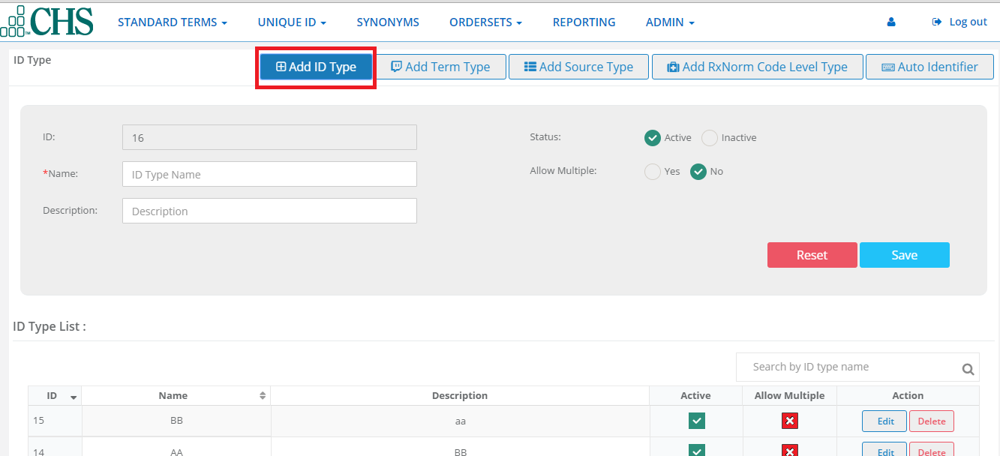

ID Admin¶
Add ID Type¶
Add ID Type is used for assigning value to each of the hospital(facilities) and EHRs.
- Click on Add Id Type button
2.You will see the ID Type customization Screen.
{kind=link}
3.The Id is a automatically numbered for the next ID type. Type a Name,and then a Description.Click to checkmark a status of either Active or Inactive,and whether or not to Allow Multiples.

4.Click Save.The new hospital will now appear in the ID Type List.
5.Each ID can be changed or removed by using EDIT or DELETE. Click the EDIT button.
6.If you decide Not to change the ID,Click Close.If you want to save Changes,click UPDATE.
Add Term Type¶
Term type is used by ClinicalTermMap Admins to make sure National library of Medicine terminology is up to date on a monthly basis.
Note: Throughout the year US Library updates. ClinicalTermMap by NUSIV will update the RXCUI lookup table data in the cloud, if there are any mismatches, it will be updated.CHS or other client, they have an EHR they have to update the data in ,each hospital logs sends their databases as an import and then we give back to the same file. We don’t want to chane the format they send us - if ther is a duplicate, there will not be a problem.
Add Source Type¶
Source type shows a list of medication providers. This list comes from the National Library of Medicine.